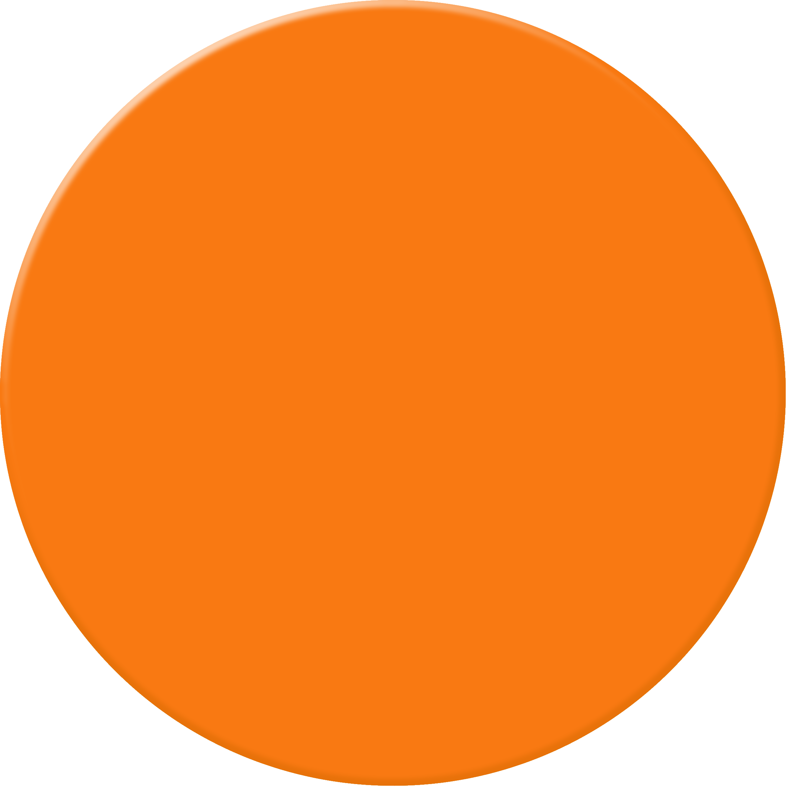
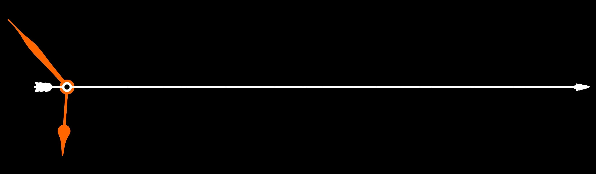

Mis experiencias


2011∼ Tras trabajar en el negocio familiar desde la adolescencia atendiendo al público, me recibía del colegio san José con el título de "Bachiller secundario con especialidad en economía y gestión de las organizaciones" y me disponía a comenzar mi formación universitaria en la Universidad Tecnología Nacional en busca del título de Ingeniero en Sistemas.
2013∼ Tras solo un año completo de estudios, por motivos de fuerza mayor me vi obligado a posponer mis estudios y hacerme cargo del negocio familiar, esta vez como administrador, empapándome en la experiencia de llevar adelante un negocio. Al mismo tiempo comencé a trabajar en lo que hasta el momento solo era un hobby para mí: El armado y mantenimiento de PC.
2016∼ Durante este período de tiempo fui delegando mis responsabilidades en el negocio familiar para dedicarme cada vez más a la reparación de PC y acercándome al mundo de la programación, sedimentando la idea que siempre tuve de dedicar mi vida el rubro IT.
2018∼ Con intenciones de sumergirme en un entorno tecnológico más avanzado, decido certificarme como "Profesional en Armado, Configuración y Mantenimiento de Computadoras" en la Universidad Nacional del Litoral y comenzar una búsqueda laboral en la industria de la Tecnología, con la fortuna de tomar el rol de "Soporte de Sistemas" en SADESA S.A. una importante empresa de curtido del cuero.
2022∼ Con un ambiente de trabajo cercano y empujado por mis deseos de seguir adquiriendo conocimientos y habilidades, decido retomar mi formación, realizando diversos cursos en el área de la tecnología y el desarrollo, como cableado estructurado, programación y alcanzando el diploma certificado de desarrollador web full stack.